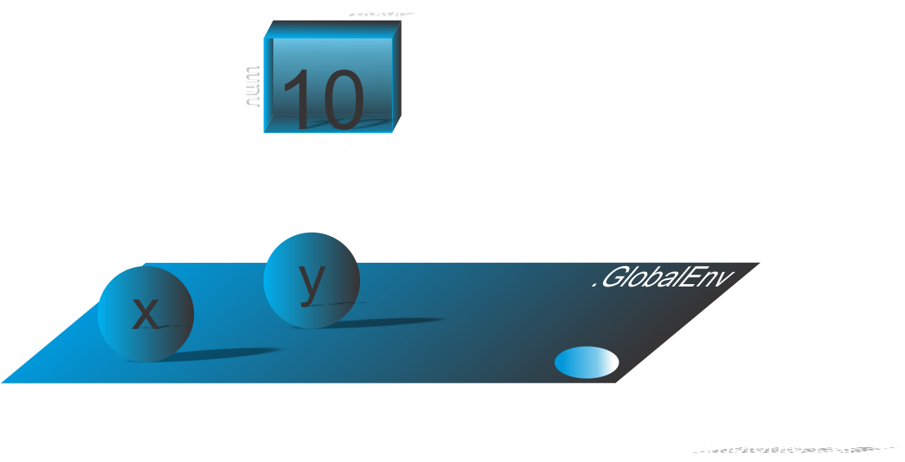

Estatística Computacional
Aula 03 - Objetos em R
Selo DC

Acesso a todo material

Introdução
John Chambers (Criador da linguagem S) afirma:
Princípio do Objeto: Tudo que existe em
Ré um objeto
- Definimos um objeto como uma entidade no ambiente
Rcom características internas contendo informações necessárias para interpretar sua estrutura e conteúdo- Atributos
- Atributos intrínsecos: modo e comprimento
Associando o nome a um objeto
> x <- 10
- Comandos de atribuição
- Use:
<-, isto é,<+- - Evite:
=, use apenas para definir argumentos em uma função - Nomes sintáticos e nomes não sintáticos;
Nomes sintáticos e não sintáticos
-
Deve consistir em letras, dígitos,
.e_; -
Os nomes devem ser iniciado por uma letra ou um ponto não seguido de um número, Ex.:
.123; -
Letras maiúsculas e minúsculas são diferentes;
-
Não pode inicia por
_ou dígito; -
Não pode usar palavras reservadas:
?Reserved().
Nomes sintáticos e não sintáticos
# Nome nao sintatico
.123 <- 50
## Error in 0.123 <- 50 : lado esquerdo da atribuicao inválida (do_set)
# Qual a sugestao de nome sintatico para '.123'?
make.names(.123)
[1] "X0.123"
Associando um nome ao objeto
> x <- 10 # Ou 10 -> x
> lobstr::obj_addr(x)
> # [1] "0xf8a104fc20"
Associando um nome ao objeto
> y <- x
> lobstr::obj_addr(y)
> # [1] "0xf8a104fc20"
Associando um nome ao objeto e ambiente global
Associando um nome ao objeto
> lobstr::obj_addr(x)
> # [1] "0xf8a104fc20"
> x <- 30
> lobstr::obj_addr(x)
> # [1] "0x42db6dbb50"
Atributos e Classes
- atributos intrínsecos:
- modo:
mode()baseado na linguagemSetypeof()baseado na linguagemC
- comprimento:
length()
- modo:
- Demais atributos:
attributes() - Classe:
class()esloop::s3_class()e atributo classe porattributes()
Atributo intrínseco de modo (Vetores)
> # Objeto modo caractere
> x <- "Ben"; mode(x)
## [1] "character"
> # Objeto modo logico
> z <- TRUE; mode(z)
## [1] "logical"
> # Objeto modo complexo
> w <- 1i; mode(w)
## [1] "complex"
Atributo intrínseco de modo (Vetores)
> # Objeto modo numerico
> y <- 10L; mode(y); y2 <- 10; mode(y2)
## [1] "numeric"
## [1] "numeric"
> # y eh igual a y2? # y eh identico y2?
> y == y2; identical(y, y2)
## [1] TRUE
## [1] FALSE
Atributo intrínseco de modo (Vetores)
> # Objeto modo caractere
> x <- "Ben"; typeof(x)
## [1] "character"
> # Objeto modo logico
> z <- TRUE; typeof(z)
## [1] "logical"
> # Objeto modo complexo
> w <- 1i; typeof(w)
## [1] "complex"
Atributo intrínseco de modo (Vetores)
> # Objeto modo numerico
> y <- 10L; typeof(y); y2 <- 10; typeof(y2)
## [1] "integer"
## [1] "double"
> # y eh igual a y2? # y eh identico y2?
> y == y2; identical(y, y2)
## [1] TRUE
## [1] FALSE
Resumo do modo em vetores atômicos
typeof |
mode |
|---|---|
logical |
logical |
integer |
numeric |
double |
numeric |
complex |
complex |
character |
character |
raw |
raw |
Comprimento
> # Vetor de comprimento 5
> v1 <- 1:5
> # Vetor de comprimento 3
> v2 <- c("Ben", "Maria", "Lana")
> # Vetor de comprimento quatro
> v3 <- c(TRUE, FALSE, TRUE, TRUE)
> # Vejamos o comprimento dos vetores
> length(v1); length(v2); length(v3)
## [1] 5
## [1] 3
## [1] 4
Comprimento

Resumo
Um resumo as funções mensionadas podem ser refletidas com as seguintes indagações:
base::class()eloop::c3_class(): Qual o tipo de objeto?base::mode(): Qual o tipo de dados baseados na linguagemS?base::typeof(): Qual o tipo de dados baseados na linguagemC?base::attributes(): O objeto tem atributos?base::length(): Qual o comprimento do objeto?
Sintaxe: pacote::nome_função()
Classes
- Objetos que armazenam “dados”, pensando em análises:
numericlogicalcharacterlistmatrixarrayfactordata.frame
Coersão do R
> # Criando um objeto x e imprimindo o seu resultado
> x <- c("Nome", 3, 4, 5);x
## [1] "Nome" "3" "4" "5"
Coersão imposta pelo usuário
> # Objeto de modo numerico
> minha_idade <- 35; mode(minha_idade)
## [1] "numeric"
> # Coersão do objeto para modo caractere (`string`)
> minha_idade <- as.character(minha_idade)
> mode(minha_idade)
## [1] "character"
> # Verificando se o objeto tem modo 'character'
> is.character(minha_idade)
## [1] TRUE
Tipo de objetos
-
Vetores atômicos:
- Lógicos, Numéricos e Caracteres;
- Matrizes unidimensionais (Matrix) e multidimensionais (Arrays);
-
Vetores em listas:
- Listas (Lists);
- Quadro de dados (Data frames);
Existem outros, mas para esse módulo, exploraremos estes nas seções seguintes